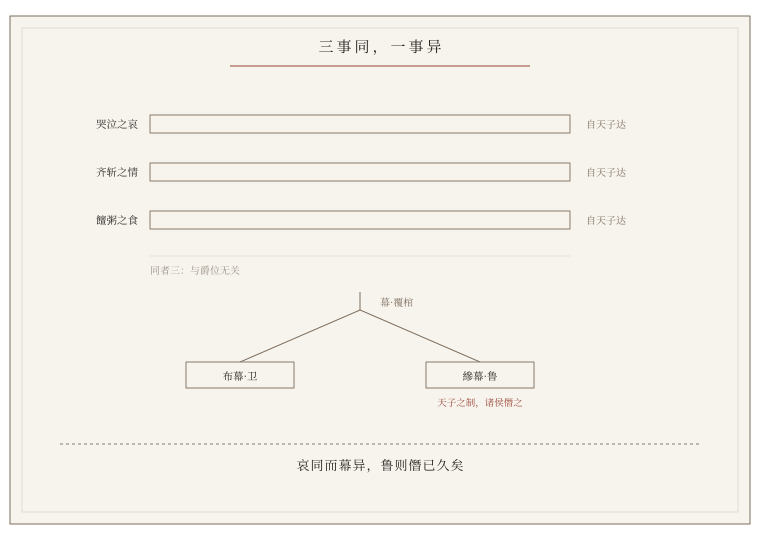

檀弓上 · 三·十三 · 第 216 课
穆公之母卒，使人问于曾申曰「如之何」。对曰：哭泣之哀、齐斩之情、饘粥之食，自天子达；末言布幕卫也、縿幕鲁也。注「子丧父母，尊卑同」「卫，诸侯礼；鲁，天子礼。两言之者，僭已久矣」。
说什么事：哪些事贵贱一样，哪些事一国一样。
落在哪一层：礼，兼及礼制与礼意。论丧礼之「同」与「异」。
为何编在此位：上节论一代之制，此节论同一代中尊卑之同异。三同而一异，正是礼的分寸所在。
【经】穆公之母卒，使人問於曾子曰：「如之何？」對曰：「申也聞諸申之父曰：哭泣之哀，齊斬之情，饘粥之食，自天子達。布幕，衛也；縿幕，魯也。」
【注】穆公，魯哀公之曾孫。問居喪之禮。曾子，曾參之子，名申。子喪父母，尊卑同。幕，所以覆棺上也；縿，縑也，縿讀如綃；衛，諸侯禮；魯，天子禮。兩言之者，僣已久矣。
【疏】此一节论尊卑之丧有同有异之事。注「穆公至曾孙」：案《世本》传记，哀公蒋生悼公宁，宁生元公嘉，嘉生穆公不衍，是曾孙也。「哭泣之哀」者，谓有声之哭、无声之泣，并为哀然，故曰「哭泣之哀」也；「齐斩之情」者，齐是为母，斩是为父，父母情同，故答云「之情」也；「饘粥之食」者，厚曰饘，希曰粥，朝夕食米一溢，孝子以此为食；「自天子达」者，父母之丧，贵贱不殊，「哭泣」以下自天子至庶人如一。「布幕，卫也；縿幕，鲁也」：既言齐斩饘粥同，又言覆棺之幕天子诸侯各别；以布为幕者卫，是诸侯之礼；以縿为幕者鲁，是天子之制。下文「加斧于椁上」，郑云「以刺绣于縿幕，加椁以覆棺，已乃屋其上，尽涂之」，如郑此言，绣幕加斧文涂之，内以覆棺椁也。周公一人得用天子礼，而后代僭用之，故曾申举卫与鲁俱是诸侯，则后代不宜异，谓鲁之诸公不宜与卫异也。崔灵恩云「当时诸侯僭效天子也，恐鲁穆公不能辨，故两言以明显鲁与诸侯之别也」。然《周礼·幕人》「掌帷、幕、幄、帟」，注「在傍曰帷，在上曰幕」「帷、幕皆以布为之」「四合象宫室曰幄，王所居之帐也」「帟，王在幕，若幄中坐，上承尘也」「幄、帟皆以缯为之」；而今云天子用绡幕者，崔灵恩云「《周礼》所陈只谓幄帟之帷幕，不论衬棺自用縿也；天子别加斧于上毕涂屋，此所陈袛谓襯棺幕在于毕涂之内者也」。
齐斩 齐衰为母，斩衰为父。
饘粥 厚曰饘，稀曰粥。朝夕食米一溢。
自天子达 自天子至庶人，此三事如一。
幕 覆棺之帷。注「幕，所以覆棺上也」。
縿 注「縿，缣也，读如绡」。细密的缯帛。
布幕／縿幕 卫以布为幕（诸侯礼），鲁以縿为幕（天子礼）。
穆公之母死，派人问曾申：「该当如何？」曾申答：「申听申的父亲说：哭泣之哀、齐斩之情、饘粥之食，自天子至于庶人一样。至于覆棺之幕，用布的是卫，用縿的是鲁。」
此答极有次第：先说三件「同」，再说一件「异」。三同者，哀、情、食——都是人子本身之事，与爵位无关；一异者，幕——是器物之饰，与国制有关。曾申不先答异而先答同，是要人明白：丧礼的第一层，贵贱一样。第二层，才分彼此。
第一层 三事自天子达 哭泣之哀、齐斩之情、饘粥之食。疏解「哭泣」为有声之哭与无声之泣，「齐斩」为父母之情同，「饘粥」为朝夕食米一溢。此三事，天子与庶人无别。礼之平等，正是从这三件最痛、最朴的事上立起来的。
第二层 一异在幕 卫用布幕，鲁用縿幕。注「卫，诸侯礼；鲁，天子礼」。鲁为诸侯而用天子之礼，是僭。曾申「两言之」，正为把这个僭点出来。疏引崔灵恩说：恐穆公不能辨，故并举两国，使其自知。
第三层 周公之僭 疏「周公一人得用天子礼，而后代僭用之」。鲁之用天子礼，起于周公之勋，而其后世遂为常。礼之僭，往往不是一次越位，而是一次特许之后不肯收回。
第四层 同异之序 三同在前，一异在后。此序本身是一句话：先把人所共有的说清，再谈人所独有。今人议事往往先争差别，古人则先定共同。
与今日何干 凡办丧、办礼、办任何有等级之事，先分清哪一层是人人都有的、哪一层是因位而异的。混了这两层，要么把人情办成排场，要么把制度办成人情。
| 左 | 右 |
|---|---|
| 哭泣之哀 | 有声之哭、无声之泣，皆为哀 |
| 齐斩之情 | 齐为母，斩为父，情同 |
| 饘粥之食 | 厚曰饘，稀曰粥，食米一溢 |
| 自天子达 | 父母之丧，贵贱不殊 |
| 布幕，卫也 | 诸侯之礼 |
| 縿幕，鲁也 | 天子之制，鲁僭用之 |
| 两言之 | 使穆公自知其僭 |
画一间丧室的内部，视点平而略低。中央一具棺，棺上覆着一层细密的缯帛（表面有细纹，边缘垂落整齐），帛面正中隐约有刺绣的斧形纹样。棺左侧一张矮几，几上一只陶碗（碗中稀粥可见），碗旁一双未动的箸。棺右侧地上铺一小片席，席上空无一人，只留一处跪坐的压痕。室内三口无装饰，光线自左侧门缝进入，落在缯帛的细纹上。不写文字、不画人。赭色只用在帛面那一小片斧纹与碗沿上。
